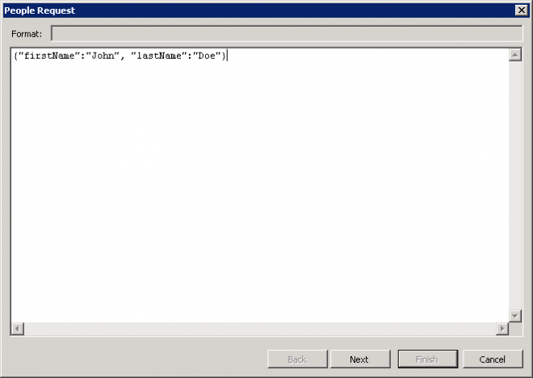
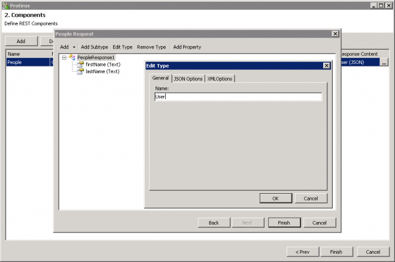
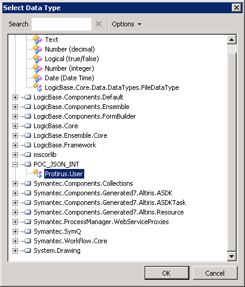

There was a question on the Forums from @Lark about Reading/Writing JSON in Workflow
https://www-secure.symantec.com/connect/forums/write-object-json-and-read-object-json
I made a couple of suggestions on the post but thought it would be useful as a article.
- Workflow - REST Generator
- Using the REST Generator in Workflow 7.6
- Using the REST Generator (GET) in Workflow 7.6 with Mobility Suite
- Using the REST Generator (Headers) in Workflow 7.6 with Mobility Suite
- Using the REST Generator (POST) in Workflow 7.6 with Mobility Suite
- Using the REST Generator (Response Content) in Workflow 7.6
- Using the REST Generator (PATHs) in Workflow 7.6
- Workflow - Read Write JSON
- Workflow - REST - Response Header
Say you have some local JSON you need to work with, the REST Generator can still be of use to turn this into an Object to work with in Workflow.
I explained about the new feature they added in a later release that allowed "Create From Sample"
A couple of things to note here, on the first page of the Generator this asks for a Namespace (Protirus), take a note of it as we will need to work with this later.
You will need to add a URL here too but it won't be used.
Grab the JSON you are wanting to work with and paste it here.

Depending on the name of your Method you will get the Data Type (DT) called this, click on Edit Type and rename if necessary.

Close and compile this.
Now add this Library to your Workflow Project.
Also add the
- Newtonsoft.Json.dll
- E:\Program Files\Symantec\Workflow\Shared\lib\
There is an issue outstanding with that not being used throughout workflow - Forum
In the Workflow use an Add Data Element (LogicBase.Components.Default.Process.InsertDataComponent) and set it to your new Date Type (DT).

Then a Read File (LogicBase.Components.Default.IO.ReadFile) to locate the JSON file you want to read.
A ByteArray To Text (LogicBase.Components.Default.EncodingComponents.ByteArrayToText)****to convert the .Contents[] of the Read File.
You now have a String you can work with.
Add a Script Component (LogicBase.Components.Scripting.ScriptedComponent)
Map your variable to the input.
Set your Result variable type to "Protirus.User"
Add in the Namespaces you saved earlier
Newtonsoft.Json
Protirus
Now add your code to deserialise the string/json to your new object
Protirus.User u = JsonConvert.DeserializeObject<Protirus.User>(json);
return u;
To do the reverse is a little simplier.
You already have your Data Type (DT), that you've retrieved and mapped in.
Grab a scripting component
Add the Namespace
System.Web.Script.Serialization
Pass it in as an input of your DataType (DT) (obj) and return a string. obj is the name of the input, this could be anything you name it.
var json = new JavaScriptSerializer().Serialize(obj);
return json;
Then you can write to a file or use however you want.